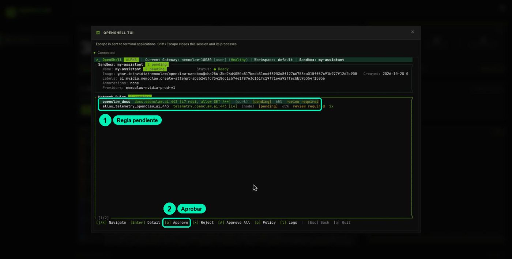
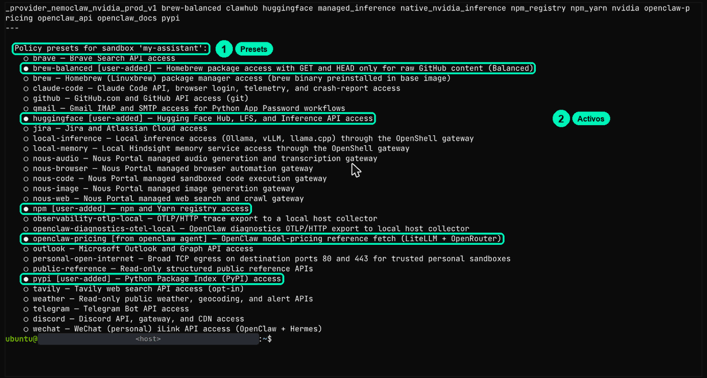
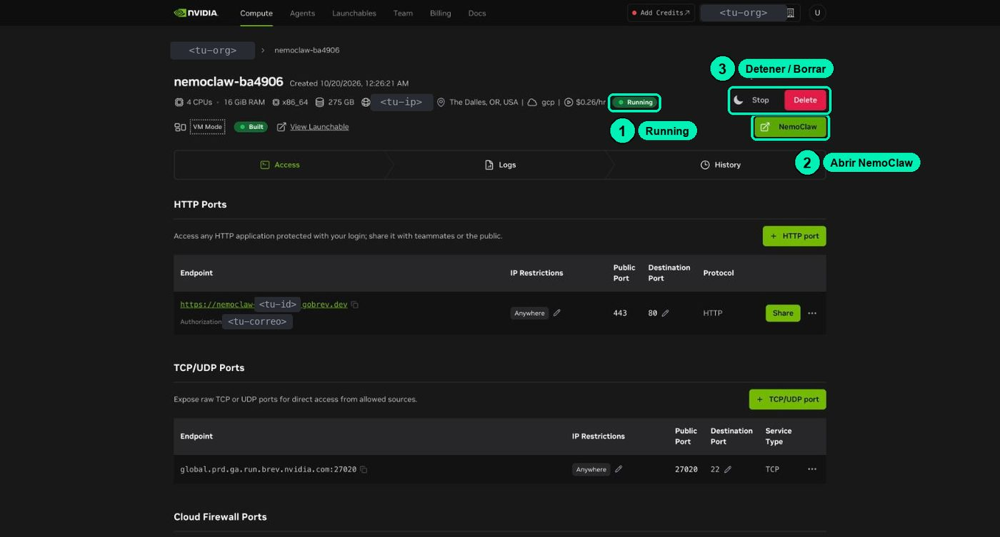

Secure Agents with NemoClaw
Secure Agents with NemoClawRestrict tools, files and network
smart_display2 videos: Teoría + Hands-oncomputerLab on BrevboltSkill: Define and verify a sandbox in OpenShell
pagesView slidesplay_arrowOpen in ColabterminalTerminal cookbook (ES)
listFull step by step
All the detail, start to finish.
🇪🇸 Original Spanish guide:
clases/5.3-sandbox-y-politicas/README.md. Slides, notebooks, cookbooks and video are in Spanish.
Read your sandbox's real policy, predict what it allows and what it blocks, check it live, and change it with NemoClaw commands.
| Video length | ≈9 min |
| Practice | Lab on Brev: NemoClaw dashboard + in-browser terminal (cookbook.md (Spanish)) + notebook (Spanish) |
| Skill | Define and verify a sandbox in OpenShell |
Materials: slides · lab cookbook (Spanish) · notebook (Spanish) · FAQ (Spanish)
This class has two videos, one on theory and one hands-on. Both use the materials on this page.
Based on lesson 04a-safety from the NVIDIA DLI «NemoClaw» course (Apache-2.0) and on
nemoclaw-blueprint/policies/from NVIDIA/NemoClaw (Apache-2.0).
What you'll achieve
- Read OpenShell's real policy (
filesystem_policy,landlock,process,network_policies) and explain each section. - Predict and verify network and file blocks, and read a block in the log or in the OPENSHELL TUI.
- Approve or reject a blocked request and explain why that lasts less than a preset.
- Add and remove the Soporte NemoClaw (NemoClaw Support) preset and explain why the sandbox is only one layer.
Your credit: this practice uses ≈25 min of running instance, inside your single lab sitting (see the lab guide (Spanish)). It's the last required lab practice. If you stop for today, use Stop and come back soon. When you finish: if you'll do the supplementary practices (6.1 and 6.2), leave the instance running and keep going; if not, save what you want and Delete.
Before you start
- Brev lab running, with the dashboard open (
https://nemoclaw-<your-id>.gobrev.dev/dashboard) andnemoclaw my-assistant statusgreen. - You did class 5.2: you know how to open the VM TERMINAL and the OPENSHELL TUI, and how to use
openshell sandbox exec -n my-assistant -- …. - You have your
trifecta.mdworksheet (5.1) with the "Identity" section (5.2). - For the notebook: Python 3.10+ or Colab. It needs no API key and no extra PyPI packages: it uses PyYAML if you have it, and an equivalent dict if you don't.
Step by step
Part 1 · Read the real policy
In the guard's panel. On the dashboard, click OPENSHELL TUI, pick my-assistant with j/k and press Enter. You see the read-only folders, the read-write folders and the network rules. The dashboard also sums it up at the top: «13 network policies».
As the operator. In the VM TERMINAL, this command prints the sandbox's full policy. Save it before you change anything:
openshell policy get my-assistant --full > ~/politica-antes.txt
less ~/politica-antes.txt
(Leave less with q.) You should see a status header, a --- line and the rules file. This is an excerpt of the published OpenClaw base policy in NemoClaw (nemoclaw-blueprint/policies/openclaw-sandbox.yaml):
filesystem_policy:
include_workdir: true
read_only: [/usr, /lib, /proc, /dev/urandom, /app, /etc, /var/log, /var/lib/dpkg]
read_write: [/tmp, /dev/null, /dev/pts, /sandbox/.openclaw, /sandbox/.nemoclaw, /home/linuxbrew]
landlock:
compatibility: best_effort
process:
run_as_user: sandbox
run_as_group: sandbox
network_policies:
openclaw_docs:
name: openclaw_docs
endpoints:
- host: docs.openclaw.ai
port: 443
protocol: rest # the proxy inspects every HTTP request
enforcement: enforce
rules:
- allow: { method: GET, path: "/**" }
binaries:
- { path: /usr/local/bin/openclaw }
Read it like this:
- Network: everything is closed except the groups in network_policies. Each group ties destinations (host, port, method, path) to programs.
- Files: Landlock allows reading read_only, reading and writing read_write and /sandbox. Everything else is denied.
- Process: it runs as sandbox. seccomp doesn't show up in this file: OpenShell always applies it.
In the test lab, the 13 network groups were: _provider_nemoclaw_nvidia_prod_v1, brew-balanced, clawhub, huggingface, managed_inference, native_nvidia_inference, npm_registry, npm_yarn, nvidia, openclaw-pricing, openclaw_api, openclaw_docs and pypi. The ones missing from the excerpt come from the tier, the active presets and the inference provider.
Part 2 · Practice in the notebook: predict → evaluate → score
Open 5.3-sandbox-y-politicas.ipynb (Spanish) in Colab. It uses the published base policy and a Python evaluator. Write your predictions for 12 actions and press ▶:
✗ d curl → API de NVIDIA (binario equivocado) predijiste ALLOW → DENY | el binario '/usr/bin/curl' no está permitido en 'nvidia'
✗ i ESCRIBIR SOUL.md (la persona) predijiste DENY → ALLOW | … está bajo read_write /sandbox/.openclaw
Puntaje: 7/12
Row d: you predicted ALLOW for curl to the NVIDIA API, but the base policy says DENY because /usr/bin/curl isn't allowed in the nvidia group. Row i: you predicted DENY for writing SOUL.md (the persona), but it's ALLOW because it sits under read_write /sandbox/.openclaw. Puntaje is your score.
The ✗ rows are the lesson: the permission is tied to the program, L7 rules stop methods, and the policy does not protect SOUL.md. Keep row d in mind: in Part 3 you'll see your lab doesn't say the same thing.
Part 3 · Check it in the sandbox
The simulator predicts; the sandbox decides. Write your prediction for each line first, then paste them in the VM TERMINAL:
openshell sandbox exec -n my-assistant -- curl -sS -m 8 -o /dev/null -w 'code=%{http_code}\n' https://inference.local/v1/models
openshell sandbox exec -n my-assistant -- curl -sS -m 8 -o /dev/null -w 'code=%{http_code}\n' https://example.com
openshell sandbox exec -n my-assistant -- curl -sS -m 6 -o /dev/null -w 'code=%{http_code}\n' http://169.254.169.254/latest/meta-data/
openshell sandbox exec -n my-assistant -- curl -sS -m 8 -o /dev/null -w 'code=%{http_code}\n' https://integrate.api.nvidia.com/v1/models
openshell sandbox exec -n my-assistant -- curl -sS -m 8 -o /dev/null -w 'code=%{http_code}\n' https://pypi.org/simple/
What came out in the test lab:
| Request | Result | What it means |
|---|---|---|
inference.local |
code=503 |
The connection got through the guard; the 503 comes from the internal route, because this lab uses NVIDIA's native route |
example.com |
curl: (56) CONNECT tunnel failed, response 403 |
Blocked by the guard: it's not on the list |
169.254.169.254 (cloud metadata) |
code=403 |
Blocked. Since it's plain HTTP, the guard's 403 shows up as a code |
integrate.api.nvidia.com |
code=200 |
Allowed for curl. NVIDIA's native inference profile opens it (note the native_nvidia_inference and _provider_nemoclaw_nvidia_prod_v1 groups) |
pypi.org |
code=200 |
Allowed by the Balanced tier (pypi group) |
The integrate.api.nvidia.com row is a real finding, not an error: the notebook says DENY because it uses the base policy; your lab also has the provider's profile. Write it down in your trifecta.md: it's a destination any program in the sandbox can reach.
Now the files:
openshell sandbox exec -n my-assistant -- sh -c 'ls /var/lib/dpkg | head -3'
openshell sandbox exec -n my-assistant -- ls /var/lib/apt/lists
openshell sandbox exec -n my-assistant -- touch /usr/prueba
Expected: the first one lists files (/var/lib/dpkg is in read_only); the second and third give Permission denied. The second is the interesting one: any Linux user could read /var/lib/apt/lists. Landlock is what denies it, because it's not in the policy.
If a prediction doesn't match, check three things before you draw conclusions: the live policy (not the notebook's), the real program, and who answered (the guard or the server?).
Part 4 · Read a block and decide
This command looks for the latest denials in the log:
nemoclaw my-assistant logs --tail 300 | grep DENIED | tail -4
Each line says who (program), where to (host:port) and why (no rule, program not allowed, or an L7 rule).
To see it with clicks and decide, use the OPENSHELL TUI:
- On the dashboard, click OPENSHELL TUI, pick
my-assistantand press Enter. - Press r (Rules). The blocked requests waiting for a decision are there, for example the
example.comone or theopenclaw_docsone fromcurlin class 5.2. - Select one and press x (Reject) to reject it. a (Approve) would approve it; A (Approve All) approves them all and p (Policy) shows the policy.

In the course, practice with x. Approving in the TUI is temporary: it applies to this sandbox, and if you recreate it, the base policy comes back. For a permission that lasts and that you can review, you use a preset (Part 5).
Part 5 · Presets: add and remove the Soporte NemoClaw one
This command shows the active and the available presets:
nemoclaw my-assistant policy list

In the test lab, brew-balanced, huggingface, npm, pypi (marked [user-added]) and openclaw-pricing ([from openclaw agent]) were active, and many more were available (github, slack, telegram, tavily, observability-otlp-local…).
Now write the project's own preset: read only, only the NemoClaw docs, and only for the agent's programs. Paste this in the VM TERMINAL to create the file:
cat > ~/soporte-docs.yaml <<'EOF'
preset:
name: soporte-docs
description: "Lectura de la documentación de NemoClaw"
network_policies:
soporte_docs:
name: soporte_docs
endpoints:
- host: docs.nvidia.com
port: 443
protocol: rest
enforcement: enforce
rules:
- allow: { method: GET, path: "/nemoclaw/**" }
binaries:
- { path: /usr/local/bin/openclaw }
- { path: /usr/local/bin/node }
EOF
It includes node because, as you saw in the 5.2 log, the agent reaches the network through node.
First do a dry run, which shows what it would open without applying it:
nemoclaw my-assistant policy add --from-file ~/soporte-docs.yaml --dry-run
You'll see the soporte_docs policy (host, GET /nemoclaw/** and the programs), the warning Warning: custom preset targets are not vetted. Review hosts before applying. and --dry-run: 'soporte-docs' not applied. Check the host and apply it:
nemoclaw my-assistant policy add --from-file ~/soporte-docs.yaml --yes
nemoclaw my-assistant policy list
It should say Applied preset: soporte-docs, and the list shows ● soporte-docs [user-added] — custom OpenShell policy. The network changes on the fly, without a restart. Try it with the agent:
nemoclaw my-assistant agent -m "Use the docs at https://docs.nvidia.com/nemoclaw/latest/ to explain in two lines what a policy preset is."
In the test run, the agent answered in two lines and the log showed no denial for docs.nvidia.com. When you're done, remove it:
nemoclaw my-assistant policy remove soporte-docs --yes
You'll see Endpoints that would be removed: docs.nvidia.com, Narrowing sandbox egress — removing: docs.nvidia.com and Removed preset: soporte-docs.
Network and inference change on the fly. Folders and user are set when the sandbox is created: to change them you edit the base policy and recreate it.
Part 6 · The wrap-up: the sandbox is one layer
In the notebook (section 9), the poisoned FAQ from 5.1 attacks Soporte NemoClaw with the base policy: the curl to the attacker's host is blocked, but the send from the agent's program to clawhub.ai (an allowed host that accepts POST) gets through. Recipe 8 in the cookbook shows it live with a fake secret: a secret the agent reads with permission has already traveled to the model. And Part 3 gave you another example: curl reaches the NVIDIA API. An allow list approves destinations, not the meaning of what travels.
Part 7 · Close the lab: save and delete
This is the last required lab practice. If you'll do the supplementary practices (6.1 and the lab part of 6.2), leave the instance running and move on to them: you close the lab there. If not, save what you want and Delete. If you'll try the Challenge in the lab, do it before you delete. When you delete the instance, everything on the VM is lost.
1. Save what you want. The course files (~/curso) are already on GitHub. To keep something your agent wrote, print it in the VM TERMINAL, select it with the mouse and paste it into your notes. For example, the report from 4.3:
nemoclaw my-assistant exec -- cat /sandbox/.openclaw/workspace/reportes/resumen-faq.md
nemoclaw-…) → Delete. Confirm in the dialog that appears.

- Check your balance. In the top menu, open Billing (or look at the balance in the top bar). Confirm the instance no longer shows up under Compute. If something doesn't add up, see the lab guide (Spanish).
Check that it worked
- ☐ You saved your policy in
~/politica-antes.txtand saw the rules in the OPENSHELL TUI. - ☐ You can point to where each of the four questions lives (network, files, process; seccomp is separate).
- ☐ Your notebook score went up after reading the ✗ rows.
- ☐ You saw a live
CONNECT tunnel failed, response 403, an unexpectedcode=200and aPermission denied, and you can explain each one. - ☐ You rejected a pending request with x in the OPENSHELL TUI.
- ☐ You added and removed the
soporte-docspreset without restarting anything. - ☐ You deleted your instance with Delete and it no longer shows up under Compute (or you left it running to continue with the supplementary practices).
Common errors
| Symptom | Cause | Fix |
|---|---|---|
curl: (56) CONNECT tunnel failed, response 403 |
The OpenShell guard denied the connection: host outside the policy or program not allowed | It's not TLS or DNS. See the reason with nemoclaw my-assistant logs --tail 300 \| grep DENIED \| tail -4 |
code=403 without "CONNECT tunnel failed" |
The server answered, or an L7 rule, or, on plain HTTP, the guard (as with 169.254.169.254) |
Identify the source before blaming the sandbox. Check the log |
inference.local returns code=503 |
The connection got through; the internal route answers 503 because the lab uses NVIDIA's native route | That's normal in this lab |
integrate.api.nvidia.com returns code=200 and you expected a block |
NVIDIA's native inference profile allows that destination for curl too |
Your lab isn't broken. Write it down as an exit channel in your trifecta.md |
Warning: custom preset targets are not vetted |
Normal notice when you add your own preset | Check that the host is the one you want and continue |
| You added the preset and the agent is still blocked | The preset doesn't include the program that actually opens the connection (for example, node and not openclaw) |
Copy the exact program path from the log or the TUI into your preset |
ls /var/lib/apt/lists works |
Landlock in best_effort on a kernel without support |
Check uname -r inside the sandbox. Network and seccomp are still active |
| A TUI approval "disappeared" | Approvals only apply to that sandbox; when you recreate it, the base policy comes back | To make it last, use a preset (policy add) |
| You type and nothing happens, or the terminal doesn't respond | The terminal doesn't have focus | Click inside the black area before typing |
| The notebook says "Sin PyYAML" ("No PyYAML") | You don't have PyYAML installed | No problem: it uses the equivalent dict. Same content |
Challenge
In the notebook (section 🏁), fill in PRESET_RETO so Soporte NemoClaw can read docs.nvidia.com/nemoclaw/** and the build.nvidia.com home page with GET only, without opening anything to curl. Success criterion: probar_reto(PRESET_RETO) scores 6/6 and nemoclaw my-assistant policy add --from-file … --dry-run accepts it in the lab.
Project milestone
Close the module with the Soporte NemoClaw policy:
- Save the contents of
soporte-docs.yamlnext to thesoporte-nemoclawskill in your project notes (copy it from the terminal or from this guide). - Add a "Policy (class 5.3)" section to your
trifecta.md: which groups the project uses, which preset of your own you added, and which exit channels are still open (the inference provider,integrate.api.nvidia.comalso forcurl, andclawhub.ai). - Optional:
nemoclaw my-assistant policy explain --writeshould updatePOLICY.md, the summary the agent reads about its own policy. If your version doesn't accept that option, skip it.
In class 6.2 (supplementary material) you'll package this as part of your skill library.
Resources
- NVIDIA DLI · lesson 04a "The OpenShell Sandbox" of the "NemoClaw" course (Apache-2.0).
- NemoClaw · base policy
openclaw-sandbox.yaml, presets and tiers. - NemoClaw · Command reference →
policy add,policy list,policy remove,policy explain,logs. - NemoClaw · Approve or Deny Network Requests and Create Custom Policy Presets.
- OpenShell · Policy schema.
- Your Brev lab: credit, plan and dashboard (Spanish).
- FAQ (Spanish).